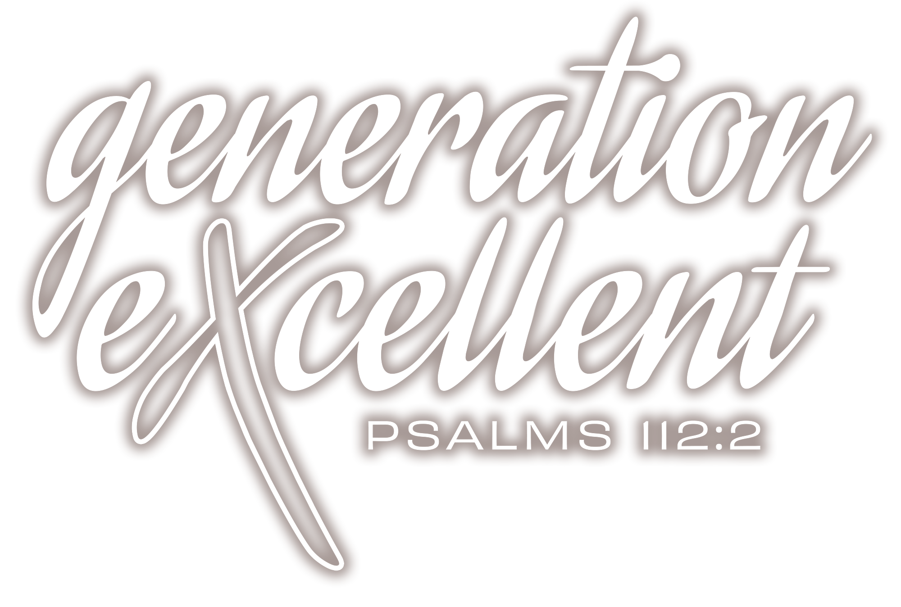
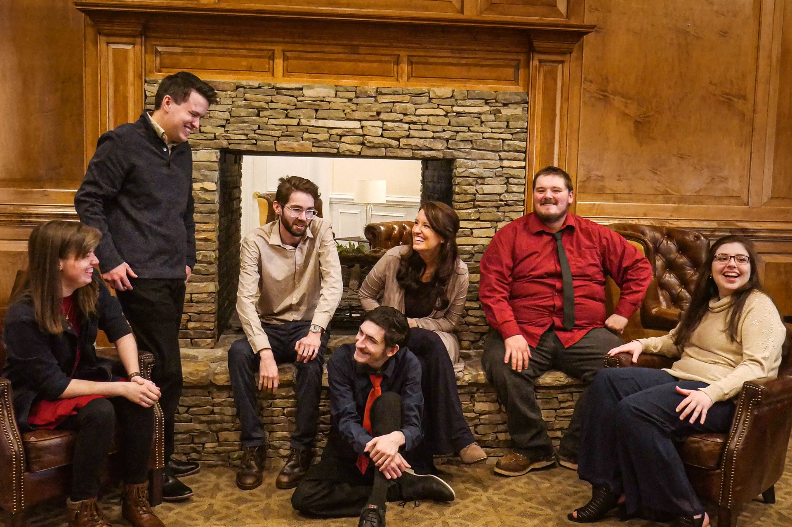
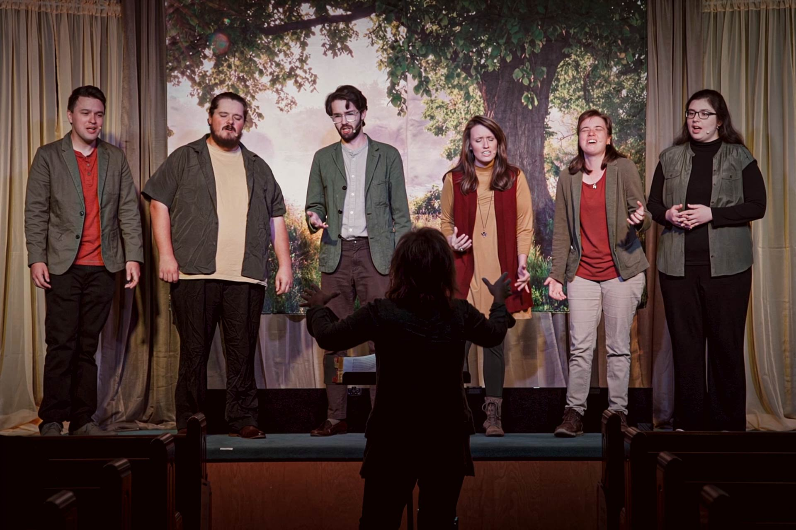
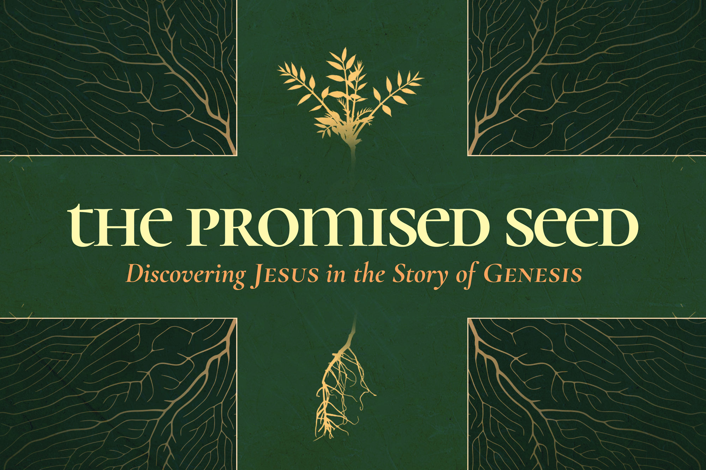
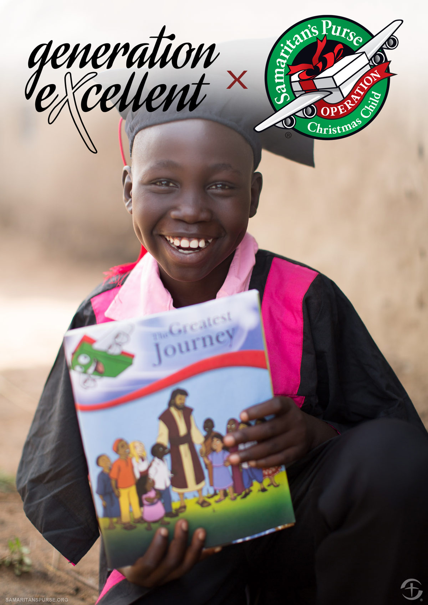

Generation Excellent is a traveling choral and drama group dedicated to spreading the hope of Jesus Christ.
Formed in 2009, Generation Excellent was initially composed of children and youth; however, over time, our members and presentations have greatly changed, evolving and maturing into a smaller group of professional adults who are strongly committed and dedicated to our original purpose and mission. Although we come from different backgrounds, it is still our utmost desire to further God’s kingdom by spreading Christ’s love and bringing encouragement to lost and hurting souls.

We craft and perform high-quality drama and choral presentations that bring the Bible to life in an intimate and personal way.
We desire our programs to connect the audience with God and the Bible. Dramatic monologues and choral music are presented with professional stage setups to invite our audience into a worshipful experience. Each year, we present a non-seasonal program which we schedule from January through October. During November and December, we offer a Christmas program which centers around remembering and worshiping the One the season is truly about.
It is not our intent to entertain congregations, but that God would use us to ignite a fire that will draw you into a closer, more personal relationship with Him.

One of the best ways to understand our salvation and our Savior is by looking at the creation account. Long before the words, “Let there be light” were uttered, a plan of redemption was in place. Discover the world was created as a setting with tools for this redemption plan. Rejoice in the fact that nothing can alter or disrupt God’s plans. See how the book of Genesis demonstrates that Jesus can take all the evil we create and make something good. And He does so not because He has to, or not because He should, but because he makes a gracious promise that He would. Marvel at the One Genesis is all about: Jesus, “The Promised Seed”!

During the 2026 season, Generation Excellent will be selling t-shirts both online and at the end of our programs to support The Greatest Journey through Samaritan’s Purse.
The Greatest Journey is a 12-lesson discipleship course for children who receive Operation Christmas Child shoeboxes. Through this program, children learn who Jesus is, how to follow Him, and how to share His love with others. As their faith grows, it often reaches beyond the child, bringing hope to families, strengthening communities, and supporting local churches. Each child studies the Bible alongside a trained local teacher and, upon completion, receives a graduation certificate and a New Testament in their own language.
100% of the proceeds from each shirt will be donated to Samaritan’s Purse to fund this program. A short-sleeve shirt provides one child the opportunity to complete The Greatest Journey, while a long-sleeve shirt provides that same opportunity for two children.
We would love for you to partner with us in this mission. When you purchase a shirt, you help place God’s Word into a child’s hands and take part in a story of faith that can last a lifetime.